Development Team Project
Group D — Airbnb NYC market segmentation and price prediction.
Ramon Flores Arteaga · MSc Artificial Intelligence
My academic work across data exploration, regression, clustering, neural networks and responsible machine learning. This portfolio brings together the development team project, individual presentation and evidence from Units 1–12.
Group D — Airbnb NYC market segmentation and price prediction.
Comparative intelligence and ethics in machine learning systems: distracted driver classification.
Initial posts, summary posts, peer responses and practical activities, organised by unit.
Airbnb NYC Market Segmentation and Price Prediction
Comparative Intelligence and Ethics in Machine Learning Systems — Distracted Driver Classification.
The original PowerPoint slide deck.
The accompanying presentation speech and references.
The original Jupyter notebook, with a browser-readable copy of its saved code and outputs.
Unit activities and discussion evidence from the supplied Final Assignment document. Expand a unit to read its initial posts, summaries and supporting work.
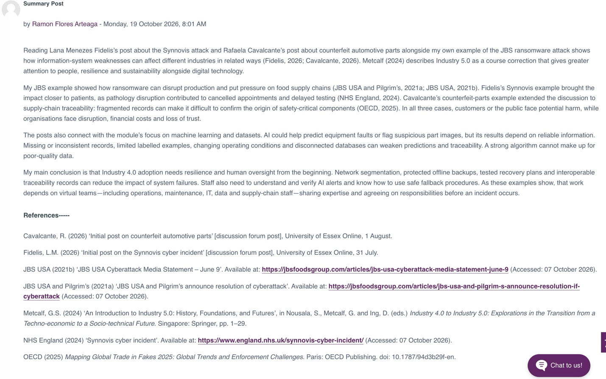
Content
01_House_Prices_Completed.ipynb — The completed original house-price tutorial.
02_Auto_MPG_EDA.ipynb — The Auto-mpg analysis covering the five tasks of the assignment.
| File | Purpose |
| 01_House_Prices_Completed.ipynb | Editable Jupyter notebook containing the completed house-price tutorial, code, charts and explanations. |
| 02_Auto_MPG_EDA.ipynb | Editable Jupyter notebook containing the Auto-mpg analysis and findings. |
| 01_House_Prices_Completed.html | Browser-readable version of the completed house-price notebook. |
| 02_Auto_MPG_EDA.html | Browser-readable version of the Auto-mpg notebook. |
| data/train.csv | Original house-price training dataset, including SalePrice . |
| data/test.csv | Original house-price test dataset, without SalePrice . |
| data/auto-mpg.csv | Original vehicle dataset used for the five required tasks. |
| Auto_MPG_Missing_Values.csv | Missing-value counts and percentages for each variable. |
| Auto_MPG_Skewness_Kurtosis.csv | Calculated skewness, excess kurtosis and observation counts. |
| Auto_MPG_Correlations.csv | Numerical correlation matrix. |
| Auto_MPG_Numerical_Encoded.csv | Derived numerical dataset containing the origin codes. Missing horsepower values remain unfilled. |
| charts/auto_missingness.png | Missing-value charts. |
| charts/auto_distributions.png | Histograms of the numerical variables. |
| charts/auto_correlation.png | Correlation heatmap. |
| charts/auto_scatterplots.png | Scatter plots comparing vehicle characteristics with MPG. |
| Seminar_and_Eportfolio_Notes.md | Findings, seminar speaking notes and reflection prompts. |
| README.md | Instructions for opening and running the notebooks. |
| original/ Original_Essex_Tutorial.ipynb | Unmodified tutorial provided by the university, retained for comparison. |
2. Auto-mpg findings
Identify missing values
The dataset contains 398 vehicles and nine variables. Six values are missing from the horsepower column, representing 1.508% of the observations. These are recorded as question marks (?) in the original file, which causes horsepower to be read as text.
After replacing ? with NaN, horsepower was converted to a numerical variable. No other missing values were detected. Removing the six incomplete observations would leave 392 complete rows, although missingness should be investigated before choosing a treatment.
Estimate skewness and kurtosis
The table reports excess kurtosis, for which a normal distribution has a reference value of 0.
| Variable | Skewness | Excess kurtosis |
| MPG | 0.457 | −0.511 |
| Cylinders | 0.527 | −1.377 |
| Displacement | 0.720 | −0.747 |
| Horsepower | 1.087 | 0.697 |
| Weight | 0.531 | −0.786 |
| Acceleration time | 0.279 | 0.419 |
| Model year | 0.012 | −1.181 |
Horsepower has the strongest positive skewness, indicating a longer tail towards high-powered vehicles. MPG, displacement and weight also have positive skewness. Model year has approximately zero skewness, although this does not mean it follows a normal distribution.
Horsepower and acceleration time have positive excess kurtosis, suggesting heavier tails relative to a normal reference. The remaining variables have negative excess kurtosis. Origin and car name were excluded because they are nominal categories.
Correlation heatmap
The following Pearson correlations describe relationships with MPG:
| Variable | Correlation with MPG |
| Weight | −0.832 |
| Displacement | −0.804 |
| Horsepower | −0.778 |
| Cylinders | −0.775 |
| Model year | 0.579 |
| Acceleration time | 0.420 |
Weight has the strongest negative association with MPG. Heavier vehicles generally have lower fuel economy. Larger engines, higher horsepower and more cylinders are also associated with lower MPG.
Later model years are associated with higher MPG. Weight, displacement, horsepower and cylinders are strongly related to one another, so their effects should not be interpreted independently.
Origin was excluded because correlations based on arbitrary category codes could be misleading. These correlations show association, not causation.
Scatter plots for different parameters
The scatter plots support the heatmap findings:
Weight versus MPG: fuel economy generally decreases as weight increases, with a curved pattern.
Horsepower versus MPG: higher-powered vehicles generally have lower MPG.
Displacement versus MPG: larger engines generally have lower MPG.
Model year versus MPG: later vehicles tend to achieve higher MPG.
Cylinders versus MPG: four-cylinder vehicles generally achieve higher MPG than eight-cylinder vehicles.
Acceleration time versus MPG: vehicles taking longer to accelerate tend to have higher MPG. A higher time means slower acceleration, not better acceleration performance.
The plots also show substantial variation between vehicles, indicating that no single characteristic fully explains fuel economy.
Replace categorical values with numerical values
The original dataset already contains numerical origin codes:
| Origin | Numerical code | Vehicles |
| America | 1 | 249 |
| Europe | 2 | 70 |
| Japan | 3 | 79 |
The notebook converts these codes into readable labels and then maps the labels back to numbers to demonstrate the requested encoding.
These codes represent categories, not a numerical ranking. The notebook also demonstrates one-hot encoding, creating separate indicator columns for each origin. Car names were excluded from the baseline numerical feature table because assigning sequential numbers to names would introduce an artificial order.
# Exercise 1 · Covariance and Pearson correlation **Objective:** Investigate changes in noise, relationship direction, units, offsets and sample size. The baseline follows the Unit 3 course programme. Controlled experiments vary the data or model specification and compare numerical results with graphical evidence. Synthetic perturbations demonstrate statistical behaviour and are distinguished from observed measurements. The analysis considers sensitivity to data changes, model fit and the limitations of prediction. Results are reproducible using the fixed random seeds and the documented data sources.
Python cell 1
Python 3.12.14 | NumPy 2.3.5 | pandas 2.2.3
## 1. Original programme: reproduce the baseline `data1` is a simulated normally distributed variable. `data2` equals `data1` plus a constant and independent noise. A fixed seed makes the results reproducible; it does not guarantee a particular population correlation in every finite sample.
Python cell 2
data1: mean=100.776, population-form std=19.620
data2: mean=151.050, population-form std=22.358
Sample covariance=389.755; Pearson r=0.887612
| data1 | data2 | |
| data1 | 385.332977 | 389.754562 |
| data2 | 389.754562 | 500.380061 |
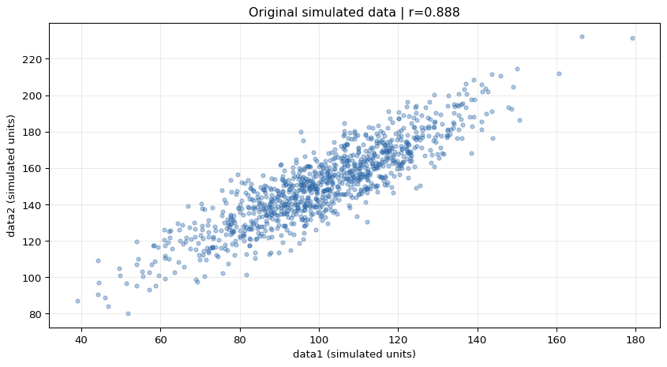
## 2. Change noise, direction, scale, offset and one data point The same `data1` and standardised noise draws are reused. Thus noise strength changes without also changing the random sample. The outlier row is deliberately artificial. Positive rescaling and translation change numerical values but leave Pearson r unchanged; negative rescaling reverses its sign. Covariance depends on measurement units.
Python cell 3
| n | Sample covariance | Pearson r | Slope | Intercept | |
| Scenario | |||||
| Baseline: noise SD 10 | 1000 | 389.7546 | 0.8876 | 1.0115 | 49.1169 |
| Higher noise: SD 40 | 1000 | 403.0193 | 0.4459 | 1.0459 | 46.4675 |
| No noise | 1000 | 385.3330 | 1.0000 | 1.0000 | 50.0000 |
| Negative relationship | 1000 | -380.9114 | -0.8832 | -0.9885 | 249.1169 |
| No signal: independent noise | 1000 | 4.4216 | 0.0219 | 0.0115 | 149.1169 |
| Multiply data1 by 10 | 1000 | 3897.5456 | 0.8876 | 0.1011 | 49.1169 |
| Add 500 to data2 | 1000 | 389.7546 | 0.8876 | 1.0115 | 549.1169 |
| Add conflicting point (300, 0) | 1001 | 359.3022 | 0.7627 | 0.8462 | 65.4516 |
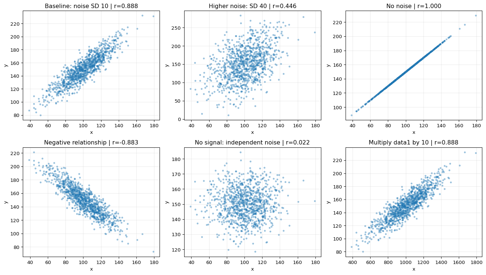
## 3. Change the number of observations Take prefixes of the same original sample. Report Fisher-transformation approximate 95% intervals, assuming independent observations and an approximately bivariate-normal population. These prefixes are nested, not independent repeated experiments. Increasing sample size usually improves precision; it does not guarantee that observed r increases or moves monotonically.
Python cell 4
| n | Pearson r | Approx. 95% lower | Approx. 95% upper | |
| 0 | 10 | 0.9048 | 0.6393 | 0.9775 |
| 1 | 30 | 0.8883 | 0.7766 | 0.9459 |
| 2 | 100 | 0.8761 | 0.8209 | 0.9150 |
| 3 | 1000 | 0.8876 | 0.8737 | 0.9001 |
## Findings and interpretation Compare the baseline and high-noise rows: added independent noise weakens the observed positive linear relationship. Removing noise gives r = 1. The negative-slope experiment reverses the direction. Independent noise has a sample correlation close to zero, rather than exactly zero. The conflicting point changes the estimates, illustrating sensitivity to unusual observations. Pearson r is dimensionless and measures linear association. Covariance is unit-dependent. Neither establishes causation, and r near zero does not rule out a nonlinear relationship. Exercise 4 provides an explicit nonlinear example.
No scheduled activity, just follow up with seminar.
e-Portfolio: Jaccard Distance/Dissimilarity Calculations.
Jaccard dissimilarity uses the presence of symptoms or positive test results, excluding shared absences.
Assuming Y = yes, P = positive, N = negative/no and A = absent, encode Y and P as 1, and N and A as 0. Name is an identifier, and gender is excluded from the comparison of clinical findings.
| Individual | Fever | Cough | Test-1 | Test-2 | Test-3 | Test-4 |
| Jack | 1 | 0 | 1 | 0 | 0 | 0 |
| Mary | 1 | 0 | 1 | 0 | 1 | 0 |
| Jim | 1 | 1 | 0 | 0 | 0 | 0 |
The formula is:
\[ d_J=\frac{b+c}{a+b+c} \]
Here, \(a\) counts attributes where both individuals have 1, while \(b+c\) counts attributes where only one individual has 1. Attributes where both have 0 are ignored.
| Pair | Shared positives \(a\) | Mismatches \( b+c \) | Calculation | Jaccard dissimilarity |
| Jack, Mary | 2 | 1 | \( 1 /( 2+ 1)\ ) | 0.3333 |
| Jack, Jim | 1 | 2 | \( 2 /( 1+ 2)\ ) | 0.6667 |
| Jim, Mary | 1 | 3 | \( 3 /( 1+ 3)\ ) | 0.7500 |
Jack and Mary share Fever and Test-1, differing only on Test-3 among their positive attributes. Jack and Jim share Fever, but differ on Cough and Test-1. Jim and Mary share Fever, but differ on Cough, Test-1 and Test-3.
Therefore, Jack and Mary are the most similar pair, while Jim and Mary are the most dissimilar.
Formative: Updated e-Portfolio and have a team update.
e-Portfolio: Perceptron Activities
# Exercise 1 · Simple perceptron This activity implements a weighted sum using NumPy and applies a step activation. It compares the original positive and negative weights, then examines the effect of changing inputs, weights and the threshold. For inputs x and weights w, the weighted sum is z = x · w. The output is 1 when z ≥ threshold and 0 otherwise. The original threshold is 1. There is no separate bias parameter or training loop in this activity; the weights are specified manually. Course source: Lakoju, M. (n.d.) *Unit 7 perceptron activities*, University of Essex Online course notebooks. Exercises 1 and 2 identify Cardiff Metropolitan University in their source attribution. The calculations and explanations below follow these teaching examples.
Python cell 1
Python 3.12.14 | NumPy 2.3.5 | pandas 2.2.3
1. Inputs, weights and the dot product The original input vector contains 45 and 25. The initial weight vector contains 0.7 and 0.1. The dot product multiplies corresponding entries and sums the products.
Python cell 2
Input type: ndarray | shape: (2,)
First input: 45.0 | first weight: 0.7
Weighted sum: 34.0
Step output: 1
2. Negative first weight Changing only the first weight from 0.7 to −0.7 reverses its contribution. The weighted sum becomes −29, which is below the threshold of 1.
Python cell 3
Weighted sum: -28.999999999999996
Step output: 0
3. Controlled changes and the threshold boundary The following comparisons isolate changes in inputs, signs, magnitudes and threshold. The step output is a binary decision, rather than a probability. A weighted sum equal to the threshold is assigned class 1.
Python cell 4
| Scenario | Inputs | Weights | Threshold | Weighted sum | Output | |
| 0 | Original weights | [45, 25] | [0.7, 0.1] | 1.0 | 34.0 | 1 |
| 1 | Negative first weight | [45, 25] | [-0.7, 0.1] | 1.0 | -29.0 | 0 |
| 2 | Smaller input values | [1, 1] | [0.7, 0.1] | 1.0 | 0.8 | 0 |
| 3 | Lower threshold | [1, 1] | [0.7, 0.1] | 0.5 | 0.8 | 1 |
| 4 | Original inputs, smaller weights | [45, 25] | [0.01, 0.01] | 1.0 | 0.7 | 0 |
| 5 | Exact threshold | [1, 3] | [0.7, 0.1] | 1.0 | 1.0 | 1 |
| 6 | Higher threshold | [45, 25] | [0.7, 0.1] | 35.0 | 34.0 | 0 |
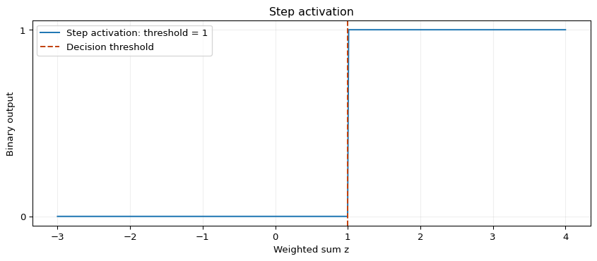
Findings The original weighted sum is 45 × 0.7 + 25 × 0.1 = 34, producing output 1.
Replacing the first weight with −0.7 gives −29 and output 0. Smaller positive inputs or weights can reduce the sum below the threshold, while reducing the threshold can change the decision without altering the sum. This activity demonstrates a forward calculation with fixed weights. It does not estimate weights from labelled examples. In subsequent activities, a learning rule updates weights from errors. A fixed threshold can also be expressed as a fixed negative bias in a zero-threshold formulation; it is not a learned bias in this example.
Exercise 2 · Perceptron for the AND operator This activity trains a single perceptron on the four Boolean input combinations. The target is 1 only when both inputs are 1. The source calculation is reproduced with a finite iteration limit, followed by a signed-error implementation of the perceptron learning rule. The network uses two input weights, a fixed threshold of 1 and no separately learned bias. The AND truth table is linearly separable. Course source: Lakoju, M. (n.d.) *Unit 7 perceptron activities*, University of Essex Online course notebooks. Exercises 1 and 2 identify Cardiff Metropolitan University in their source attribution. The calculations and explanations below follow these teaching examples.
Python cell 1
Python 3.12.14 | NumPy 2.3.5 | pandas 2.2.3
1.Truth table and initial prediction Zero initial weights produce a weighted sum of zero for every input. At threshold 1, every initial prediction is therefore 0.
Python cell 2
Input shape: (4, 2) | target shape: (4,)
| x1 | x2 | AND target | Initial prediction | |
| 0 | 0 | 0 | 0 | 0 |
| 1 | 0 | 1 | 0 | 0 |
| 2 | 1 | 0 | 0 | 0 |
| 3 | 1 | 1 | 1 | 0 |
2. Reproduce the source training rule The source rule adds learning_rate × input × absolute_error to each weight. It only increases weights. It succeeds for this specific AND example, starting from zero with learning rate 0.1, because the errors encountered are false negatives. It is not a general perceptron rule: false positives require negative corrections. The loop is bounded to prevent non-termination for unsuitable settings. The source stopping condition uses the number of errors encountered during a full training pass. A final pass with no errors is therefore included, even if the preceding pass has already produced correct final weights.
Python cell 3
Converged: True | epochs: 6 | final weights: [0.5 0.5]
| Epoch | Errors during pass | Errors after pass | w1 | w2 | |
| 0 | 1 | 1 | 1 | 0.1 | 0.1 |
| 1 | 2 | 1 | 1 | 0.2 | 0.2 |
| 2 | 3 | 1 | 1 | 0.3 | 0.3 |
| 3 | 4 | 1 | 1 | 0.4 | 0.4 |
| 4 | 5 | 1 | 0 | 0.5 | 0.5 |
| 5 | 6 | 0 | 0 | 0.5 | 0.5 |
| x1 | x2 | Target | Weighted sum | Prediction | |
| 0 | 0 | 0 | 0 | 0.0 | 0 |
| 1 | 0 | 1 | 0 | 0.5 | 0 |
| 2 | 1 | 0 | 0 | 0.5 | 0 |
| 3 | 1 | 1 | 1 | 1.0 | 1 |
3. Signed-error perceptron and learning-rate comparison The standard signed update is w ← w + learning_rate × (target − prediction) × input. It increases weights for false negatives and decreases them for false positives. The threshold remains fixed to preserve the source architecture. Convergence still depends on representability, update settings and the data; an epoch limit remains necessary.
Python cell 4
| Learning rate | Epochs including zero-error pass | w1 | w2 | Converged | Correct truth-table rows | |
| 0 | 0.05 | 12 | 0.55 | 0.55 | True | 4 |
| 1 | 0.10 | 6 | 0.50 | 0.50 | True | 4 |
| 2 | 0.20 | 4 | 0.60 | 0.60 | True | 4 |
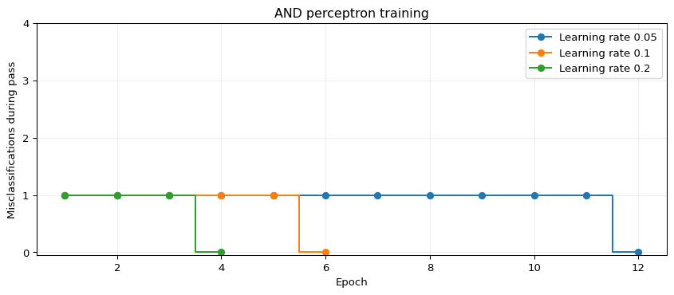
4. Threshold changes with the trained weights fixed Changing the activation threshold changes the classification rule without refitting weights. The truth-table outputs below compare thresholds 0.5, 1.0 and 1.5.
Python cell 5
| x1 | x2 | AND target | Prediction threshold 0.5 | Prediction threshold 1.0 | Prediction threshold 1.5 | |
| 0 | 0 | 0 | 0 | 0 | 0 | 0 |
| 1 | 0 | 1 | 0 | 1 | 0 | 0 |
| 2 | 1 | 0 | 0 | 1 | 0 | 0 |
| 3 | 1 | 1 | 1 | 1 | 1 | 0 |
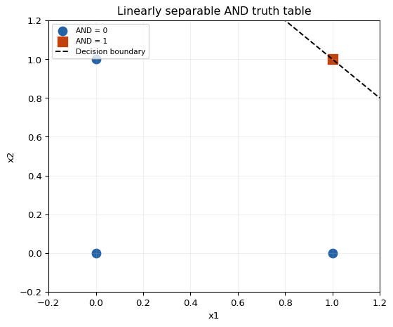
Findings The source procedure learns weights that classify all four AND combinations correctly. The signed-error implementation produces correct classifications for each tested learning rate, although the number of passes and final weights can differ. A lower threshold can change the rule to OR, while a higher threshold can suppress all positive classifications. The 4/4 result checks the complete Boolean truth table. It is not a held-out performance estimate for an external population. AND is linearly separable; XOR cannot be represented by a single linear threshold unit.
Collaborative Discussion 2: Legal and Ethical Views on ANN Applications.
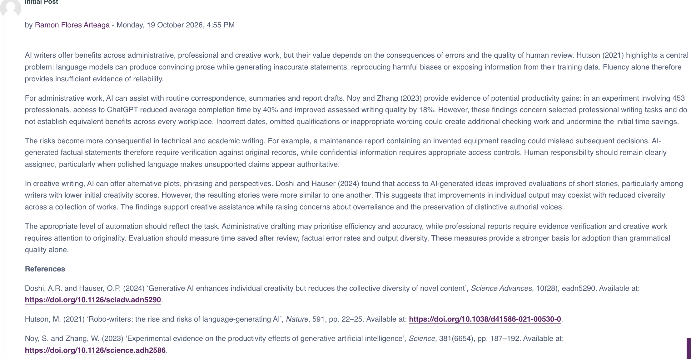
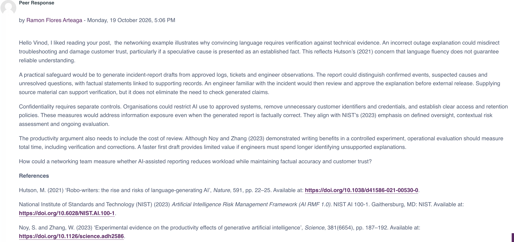
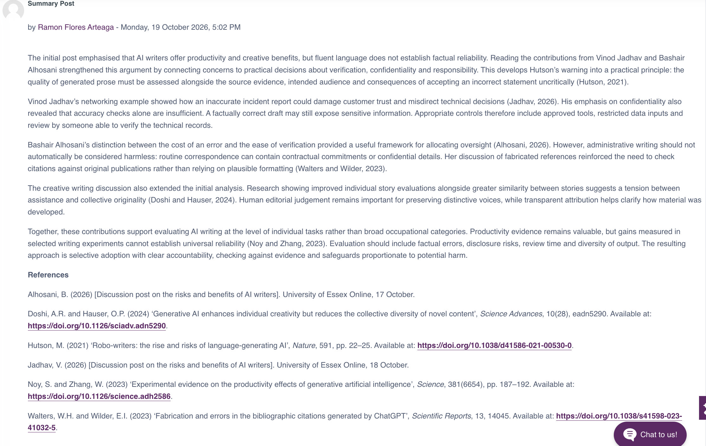
CNN object recognition The supplied convolutional neural network is trained on CIFAR-10. The required prediction experiment changes test index 16 to 7. Index 7 was fixed before evaluating predictions. Indexing is zero-based, so index 7 represents the eighth test image. The original architecture, 40,000/10,000 training/validation split, Adam optimiser, batch size 32 and maximum 25 epochs are retained. Compatibility changes replace deprecated `predict_classes` with `predict` and `argmax`, use a single TensorFlow/Keras API, and introduce an explicit input layer. Images remain four-dimensional until the Flatten layer. Float32 preprocessing reduces memory use. Early stopping monitors validation loss with patience 2; restoring the best validation-loss weights is an explicit improvement over the original default. A seeded, shuffled `tf.data` pipeline controls CPU resource use. Results may vary across hardware and software versions. This is ten-class object classification, not face identification. It illustrates the mechanics and limitations of image recognition without testing the reliability or fairness of a biometric system. The lecturecast was not supplied; this record covers the supplied notebook and the stated reading activity.
1. Libraries and reproducibility TensorFlow 2.20.0 was used for execution. A Python environment with the packages listed in `requirements.txt` is sufficient. CIFAR-10 is downloaded by Keras on the first run; internet access is required. No separate CSV file is needed.
Python cell 1
Python: 3.12.14 | TensorFlow: 2.20.0
2. Dataset and preprocessing CIFAR-10 contains 60,000 colour images of size 32 × 32: 50,000 training and 10,000 test images, distributed across ten object classes (Krizhevsky, 2009). The first 10,000 training images form the validation set, matching the tutorial. Pixel intensities are scaled from 0–255 to 0–1. Labels are one-hot encoded for categorical cross-entropy. Validation determines when training stops; the test set is reserved for final evaluation.
Python cell 2
| split | images | |
| 0 | training | 40000 |
| 1 | validation | 10000 |
| 2 | test | 10000 |
| class | test_images | |
| 0 | airplane | 1000 |
| 1 | automobile | 1000 |
| 2 | bird | 1000 |
| 3 | cat | 1000 |
| 4 | deer | 1000 |
| 5 | dog | 1000 |
| 6 | frog | 1000 |
| 7 | horse | 1000 |
| 8 | ship | 1000 |
| 9 | truck | 1000 |
3. Model architecture Convolutional filters learn spatial patterns shared across image positions. ReLU introduces non-linearity. Max pooling reduces spatial resolution; Flatten converts the final feature maps to an 800-element vector. A dense layer combines features and softmax assigns scores to the ten classes. Adam updates weights to minimise categorical cross-entropy. Softmax scores sum to one, but are not automatically calibrated estimates of correctness.
Python cell 3
Model: "cifar10_tutorial_cnn"
┏━━━━━━━━━━━━━━━━━━━━━━━━━━━━━━━━━┳━━━━━━━━━━━━━━━━━━━━━━━━┳━━━━━━━━━━━━━━━┓
┃ Layer (type) ┃ Output Shape ┃ Param # ┃
┡━━━━━━━━━━━━━━━━━━━━━━━━━━━━━━━━━╇━━━━━━━━━━━━━━━━━━━━━━━━╇━━━━━━━━━━━━━━━┩
│ conv2d (Conv2D) │ (None, 29, 29, 32) │ 1,568 │
├─────────────────────────────────┼────────────────────────┼───────────────┤
│ max_pooling2d (MaxPooling2D) │ (None, 14, 14, 32) │ 0 │
├─────────────────────────────────┼────────────────────────┼───────────────┤
│ conv2d_1 (Conv2D) │ (None, 11, 11, 32) │ 16,416 │
├─────────────────────────────────┼────────────────────────┼───────────────┤
│ max_pooling2d_1 (MaxPooling2D) │ (None, 5, 5, 32) │ 0 │
├─────────────────────────────────┼────────────────────────┼───────────────┤
│ flatten (Flatten) │ (None, 800) │ 0 │
├─────────────────────────────────┼────────────────────────┼───────────────┤
│ dense (Dense) │ (None, 256) │ 205,056 │
├─────────────────────────────────┼────────────────────────┼───────────────┤
│ dense_1 (Dense) │ (None, 10) │ 2,570 │
└─────────────────────────────────┴────────────────────────┴───────────────┘
Total params: 225,610 (881.29 KB)
Trainable params: 225,610 (881.29 KB)
Non-trainable params: 0 (0.00 B)
4. Training and validation Training uses all 40,000 training images. Early stopping ends training after two successive epochs without a validation-loss improvement, then restores the best weights. Validation results guide this decision; test predictions do not. The history records all completed epochs, including epochs after the best checkpoint.
Python cell 4
/workspace/scratch/4b70611e66a6/work/unit09_venv/lib/python3.12/site-packages/keras/src/trainers/epoch_iterator.py:74: UserWarning: `shuffle=True` was passed, but will be ignored since the data `x` was provided as a tf.data.Dataset. The Dataset is expected to already be shuffled (via `.shuffle(buffer_size)`).
self.data_adapter = data_adapters.get_data_adapter(
Epoch 1/25
1250/1250 - 12s - 10ms/step - accuracy: 0.4424 - loss: 1.5427 - val_accuracy: 0.5307 - val_loss: 1.3055
Epoch 2/25
1250/1250 - 9s - 7ms/step - accuracy: 0.5739 - loss: 1.2065 - val_accuracy: 0.6091 - val_loss: 1.1232
Epoch 3/25
1250/1250 - 9s - 7ms/step - accuracy: 0.6349 - loss: 1.0406 - val_accuracy: 0.6383 - val_loss: 1.0394
Epoch 4/25
1250/1250 - 9s - 8ms/step - accuracy: 0.6801 - loss: 0.9234 - val_accuracy: 0.6633 - val_loss: 0.9798
Epoch 5/25
1250/1250 - 9s - 7ms/step - accuracy: 0.7135 - loss: 0.8243 - val_accuracy: 0.6579 - val_loss: 0.9886
Epoch 6/25
1250/1250 - 9s - 7ms/step - accuracy: 0.7431 - loss: 0.7418 - val_accuracy: 0.6643 - val_loss: 1.0034
Completed epochs: 6 | Best validation-loss epoch: 4
Training time in seconds: 56.8
| accuracy | loss | val_accuracy | val_loss | |
| epoch | ||||
| 1 | 0.44238 | 1.54267 | 0.5307 | 1.30546 |
| 2 | 0.57395 | 1.20652 | 0.6091 | 1.12321 |
| 3 | 0.63493 | 1.04055 | 0.6383 | 1.03940 |
| 4 | 0.68012 | 0.92343 | 0.6633 | 0.97979 |
| 5 | 0.71352 | 0.82433 | 0.6579 | 0.98856 |
| 6 | 0.74308 | 0.74182 | 0.6643 | 1.00335 |
Python cell 5
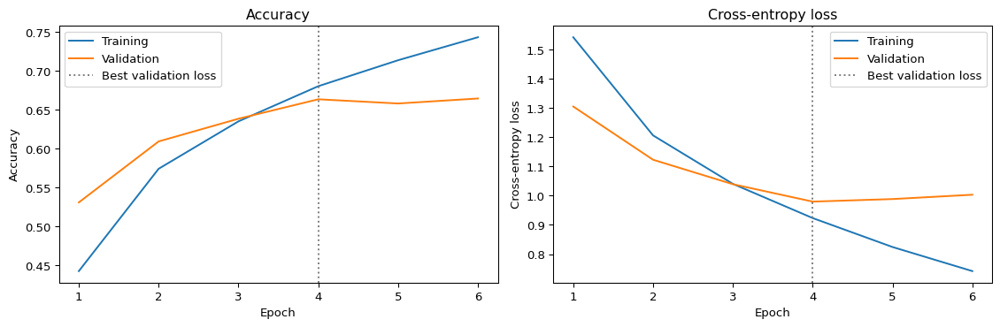
5. Held-out test evaluation Accuracy is measured on all 10,000 test images after the validation-based checkpoint is selected. A confusion matrix and class-level precision, recall and F1 provide more information than a single accuracy value. Class errors here concern objects; they cannot establish demographic fairness.
Python cell 6
Test accuracy: 65.7800% (6578/10000 correct)
Test loss: 0.98500
| precision | recall | f1-score | support | |
| airplane | 0.7124 | 0.7480 | 0.7298 | 1000.0 |
| automobile | 0.7298 | 0.8050 | 0.7656 | 1000.0 |
| bird | 0.5672 | 0.4980 | 0.5304 | 1000.0 |
| cat | 0.5501 | 0.3240 | 0.4078 | 1000.0 |
| deer | 0.5865 | 0.6340 | 0.6093 | 1000.0 |
| dog | 0.5375 | 0.5880 | 0.5616 | 1000.0 |
| frog | 0.5964 | 0.8350 | 0.6958 | 1000.0 |
| horse | 0.7998 | 0.6470 | 0.7153 | 1000.0 |
| ship | 0.7542 | 0.7580 | 0.7561 | 1000.0 |
| truck | 0.7477 | 0.7410 | 0.7443 | 1000.0 |
| macro avg | 0.6582 | 0.6578 | 0.6516 | 10000.0 |
| weighted avg | 0.6582 | 0.6578 | 0.6516 | 10000.0 |
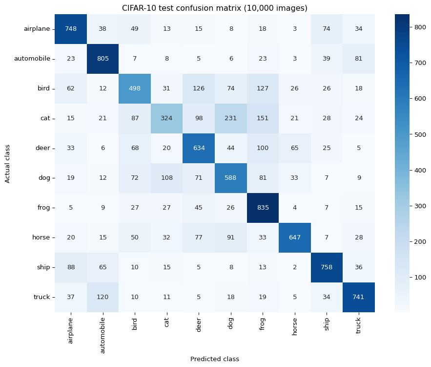
6. Required image-index experiment: 16 → 7 `IMAGE_INDEX = 7` changes the image displayed and the label/probabilities retrieved. This avoids the misleading result obtained when the plot index is changed but a prediction still refers to index 16. Class prediction uses `argmax`, replacing the removed `predict_classes` method. The original index 16 is retained only as a comparison. A correct result for one image is not evidence that every image is classified correctly.
Python cell 7
| index | actual | predicted | top_softmax_score | correct | |
| 0 | 16 | dog | dog | 0.740291 | True |
| 1 | 7 | frog | frog | 0.428328 | True |
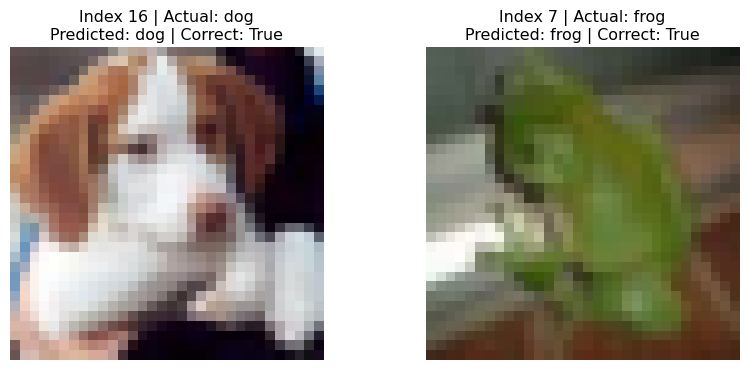
| class | softmax_score | |
| 6 | frog | 0.428328 |
| 2 | bird | 0.314397 |
| 4 | deer | 0.202980 |
| 0 | airplane | 0.017727 |
| 3 | cat | 0.017046 |
| 5 | dog | 0.010456 |
| 9 | truck | 0.003608 |
| 8 | ship | 0.002841 |
| 7 | horse | 0.002299 |
| 1 | automobile | 0.000317 |
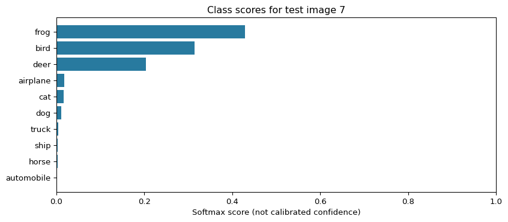
7. Interpretation of the recorded run Training completed 6 epochs; the minimum validation loss occurred at epoch 4. Restored weights achieved **65.78% test accuracy** (6,578/10,000). Image 7 was classified **correctly**: actual **frog**, predicted **frog**, top softmax score **0.4283**.
The highest class recall was frog; the lowest was cat. The largest directional confusion was cat → dog. Changing the image index alters the example inspected, not model weights or overall test accuracy. A correct prediction on one image cannot establish deployment safety. Recorded values describe this execution; a new run may produce different values. The tables generated by the code are authoritative for a rerun.
8. Reading identification The reading is provisionally identified as Matthew Wall's BBC article *Biased and wrong? Facial recognition tech in the dock* (8 July 2019).
The module reading-list entry and lecturecast were not supplied. The article text was consulted through an accessible mirror, listed in the references.
Ethical and social reflection Wall (2019) places image recognition within a difficult social trade-off: automated identification may support security, but mistaken matches and surveillance can harm innocent people. The article also asks whether deployment is appropriate in a particular context. This suggests that technical feasibility alone is an inadequate basis for adoption. CNNs offer a practical benefit by learning visual features instead of relying entirely on manually specified rules. In a defined setting, automated classification can assist people in reviewing large image collections. However, the value of speed depends on the consequences of errors and the availability of a reliable review process. Misclassifying an animal in a teaching exercise has different consequences from incorrectly identifying a person as a suspect. Fairness requires examination beyond overall accuracy. Buolamwini and Gebru (2018) found substantial differences across skin-tone and gender groups in commercial gender classification systems.
Their study concerned gender classification, which must be distinguished from identifying a person's identity. Grother, Ngan and Hanaoka (2019) separately documented demographic differences in face-recognition errors, with performance varying across algorithms. These findings support evaluating relevant subgroups and error types in the intended deployment context. They do not demonstrate bias in this particular CIFAR-10 model. Privacy is also a concern even when identification is accurate. Collecting or linking facial images can enable tracking that people neither expect nor meaningfully control. Appropriate safeguards should therefore include a clearly limited purpose, proportionate collection, restricted access, retention limits and a process for challenging adverse decisions. A human reviewer should have the evidence and authority needed to question an automated result; a routine approval step alone would be insufficient. The notebook reinforces a distinction between a model's output and justified trust in that output. A softmax score indicates the model's relative preference among its available classes; it does not establish that the classification is true. CIFAR-10 contains no demographic annotations suitable for the fairness assessment discussed here. Its object categories and small images also differ from operational facial recognition. Deployment would require additional evidence about representative data, false positives, false negatives, changing conditions and the impact on affected people. For high-consequence uses, independent evaluation and accountability should accompany technical performance measures.
References
Buolamwini, J. and Gebru, T. (2018) ‘Gender shades: Intersectional accuracy disparities in commercial gender classification, Proceedings of the 1st Conference on Fairness, Accountability and Transparency, Proceedings of Machine Learning Research, 81, pp. 77–91. Available at: https://proceedings.mlr.press/v81/buolamwini18a.html (Accessed: 19 October 2026).
Grother, P., Ngan, M. and Hanaoka, K. (2019) Face recognition vendor test part 3: Demographic effects. NISTIR 8280. Gaithersburg, MD: National Institute of Standards and Technology. Available at: https://doi.org/10.6028/NIST.IR.8280 (Accessed: 19 October 2026).
Krizhevsky, A. (2009) Learning multiple layers of features from tiny images*. Technical report. Toronto: University of Toronto. Dataset and report available at: https://cave.cs.toronto.edu/kriz/cifar.html (Accessed: 19 October 2026).
University of Essex Online (n.d.) *Convolutional neural networks (CNN) – Object recognition* [Jupyter notebook]. Unit 9 teaching materials. Supplied file: `Unit09 Ex1 Convolutional Neural Networks (CNN) - Object Recognition.ipynb.
Wall, M. (2019) Biased and wrong, Facial recognition tech in the dock, BBC News, 8 July. Available at: https://www.bbc.com/news/business-48842750 (Accessed: 19 October 2026). Text consulted through an accessible mirror: https://bbcinsight.pages.dev/news/business-48842750.
Formative: Discussion in Unit 8, Summary post was finished.
e-Portfolio: Updated e-Portfolio.
e-Portfolio
Unit 11 · Findings on AUC and R² The supplied notebook was executed with scikit-learn 1.8.0. The original examples were retained with documented compatibility corrections, then extended with five controlled experiments. All datasets are available within scikit-learn; no additional CSV input is required.
Original regression calculation
The original example gives **MSE = 0.375000**, **RMSE = 0.612372**, **MAE = 0.500000** and **R² = 0.948608**. Its heading originally stated RMSE although the code calculated MSE. The completed notebook reports both.
R² measures performance relative to predicting the mean of the evaluation targets. Higher values are better; 1 indicates perfect predictions and negative values are possible. ROC AUC measures score-based class discrimination across thresholds and should be calculated from continuous probabilities or decision scores (scikit-learn developers, n.d.a; n.d.b).
1. Logistic regression C and AUC
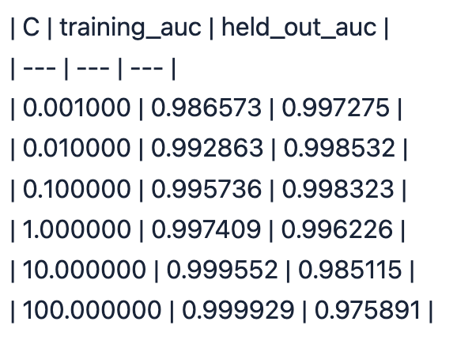
With observations, split, scaling and solver fixed, held-out AUC changed from **0.997275 at C=0.001** to **0.975891 at C=100**. The observed values show that changing regularisation can alter rankings and that weaker regularisation does not guarantee better held-out AUC. These results describe one exploratory split, rather than a universally optimal C.
2. Irrelevant features and AUC
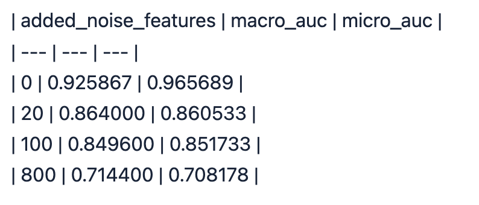
Macro AUC changed from **0.925867 without added noise** to **0.714400 with 800 irrelevant features**. With only 75 training observations, extra uninformative dimensions can distract the classifier from useful structure. The intermediate values should be interpreted as observed outcomes, not a requirement that every increase in noise produces a strictly monotonic decrease.
3. Threshold changes
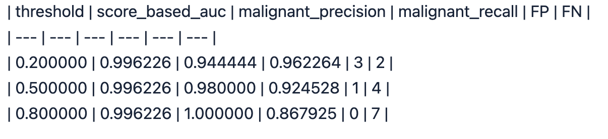
All three thresholds retain AUC **0.996226**, because the probabilities and their ranking remain fixed. Changing the threshold changes the decision rule and can alter precision, recall and the false-positive/false-negative balance. In this extension, label 1 means malignant; this reverses the positive-class meaning used by the original binary AUC demonstration.
4. Prediction-error multiplier and R²
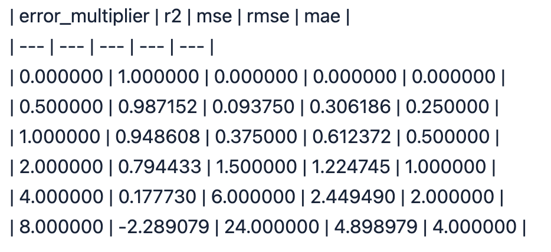
R² falls from **1.000000** for perfect predictions to **-2.289079** at error multiplier 8. The negative result means these predictions are worse in squared-error terms than predicting the evaluation-target mean. RMSE and MAE increase as the prediction errors grow. This experiment manipulates prediction errors directly and does not fit a regression model.
5. Ridge alpha and R²
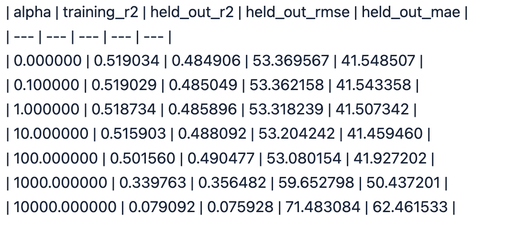
On the fixed diabetes split, held-out R² was **0.484906** for ordinary least squares and **0.075928** at alpha=10,000. Excessive regularisation can cause underfitting by shrinking useful coefficients too strongly. The full table also shows whether moderate shrinkage improves performance on this particular split. RMSE and MAE retain the target's units and complement the dimensionless R² score.
Interpretation and limitations
The original binary and Iris logistic regression AUC values are training-data scores: 0.994768 and 0.991333, respectively. They must not be reported as evidence of performance on unseen data. Their values are not directly comparable with the later held-out experiment because preprocessing, class coding and evaluation observations differ.
The original noisy Iris class-2 AUC is 0.786765; its micro AUC is 0.727733. That original example uses different splitting and preprocessing from the controlled noise extension. Multiclass averaging and the positive-class definition must therefore accompany any AUC figure.
The parameter comparisons use fixed seeds and fixed splits to isolate changes, but contain no confidence intervals or external validation. They demonstrate sensitivity to modelling choices. They do not establish causality, clinical usefulness or fairness. AUC is not a calibration measure, and neither AUC nor R² describes every operational consequence of a prediction.
Ethical, social and professional implications
An apparently strong aggregate score can conceal harmful individual errors. In the malignant-positive extension, false negatives represent malignant cases predicted as benign, while false positives represent benign cases predicted as malignant. These error types have different potential consequences. The threshold experiment therefore supports examining confusion matrices and recall alongside AUC. It does not establish a clinically acceptable threshold.
Evaluation integrity is a professional responsibility. Fitting and scoring on the same data can present an overly favourable impression of generalisation. Preprocessing must be fitted on training data, class meanings must be documented, and results should include the evaluation method and limitations. Repeatedly comparing parameters on the same held-out split makes that split part of exploration; model selection would require cross-validation within development data and a separate final test set.
Privacy, appropriate data access and transparent reporting also matter when working with health-related datasets. The present exercises use packaged teaching datasets and do not justify collecting identifiable patient information. Aggregate AUC and R² cannot establish demographic fairness; subgroup error analysis would require suitable, responsibly obtained attributes and adequate sample sizes. No demographic fairness claim or deployment recommendation follows from these experiments.
References
scikit-learn developers (n.d.a) *roc_auc_score*. Available at: https://scikit-learn.org/stable/modules/generated/sklearn.metrics.roc_auc_score.html (Accessed: 19 October 2026).
scikit-learn developers (n.d.b) *r2_score*. Available at: https://scikit-learn.org/stable/modules/generated/sklearn.metrics.r2_score.html (Accessed: 19 October 2026).
scikit-learn developers (n.d.c) *OneVsRestClassifier*. Available at: https://scikit-learn.org/stable/modules/generated/sklearn.multiclass.OneVsRestClassifier.html (Accessed: 19 October 2026).
e-Portfolio: Updated
Welcome to my professional portfolio. I am a Mechatronics Engineer currently pursuing a Master of Science in Artificial Intelligence at the University of Essex. My professional background combines industrial maintenance, automation, artificial intelligence, project management and software development within multinational companies.
I am a person who takes risks to achieve more, with great initiative, adaptability to change and strong teamwork skills. Despite adversity, I remain focused on achieving objectives while helping the entire team reach its goals.
Phone: 231-286-9191
Email: rammarteaga@gmail.com
LinkedIn: Ramón Flores Arteaga
Maintenance Supervisor / Engineering
September 2024 – Present
Maintenance Supervisor & Preventive Maintenance
January 2023 – July 2024
Global Plant & Fleet Project Manager
August 2022 – January 2023
Global Plant & Fleet Maintenance Supervisor
April 2022 – January 2023
Software Tools Developer
January 2022 – June 2022
Engineering Project Manager
November 2021 – January 2022
Help Desk Support Specialist
August 2020 – August 2021
Master of Science (MSc) in Artificial Intelligence
June 2025 – Present
Currently pursuing a Master of Science in Artificial Intelligence, specializing in intelligent agents, machine learning, large language models, explainable AI, responsible AI, and autonomous systems.
Bachelor of Science in Mechatronics Engineering
January 2016 – August 2021
Studied mechanical design, industrial automation, robotics, control systems, electronics, embedded systems, PLC programming and industrial manufacturing processes.
International Engineering Program
June 2019 – January 2020
Diploma in Computer Science and Programming Using Python
August 2021 – January 2022
Completed advanced programming coursework focused on Python, software development and computational problem solving.